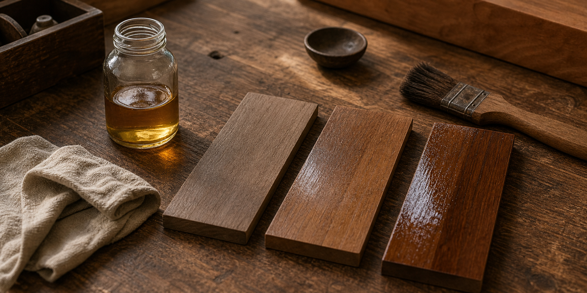

오일 마감과 우레탄 마감, 무엇이 나에게 맞을까

요약 설명:
원목 가구의 오일 마감과 우레탄 마감은 촉감, 보호력, 관리 방법이 다릅니다. 식탁, 책상, 사이드 테이블을 기준으로 어떤 마감이 생활 방식에 더 잘 맞는지 정리합니다.
검색 키워드:
- 오일 마감 우레탄 마감 차이
- 원목 가구 마감 방법
- 원목 식탁 마감 추천
- 원목 책상 마감
- 원목 가구 관리법
- 오일 마감 관리
원목 가구를 고를 때 수종만큼 중요한 것이 마감입니다. 같은 월넛 식탁이라도 오일 마감인지, 우레탄 마감인지에 따라 손에 닿는 느낌과 관리 방법이 달라집니다.
마감은 단순히 색을 예쁘게 만드는 과정이 아닙니다. 목재 표면을 보호하고, 물과 오염에 대한 저항성을 높이며, 사용자가 매일 느끼는 촉감을 결정합니다. 그래서 원목 가구를 선택할 때는 어떤 나무인가와 함께 어떤 마감인가를 꼭 살펴보는 것이 좋습니다.
이번 글에서는 오일 마감과 우레탄 마감의 차이를 생활 기준으로 정리해보겠습니다.
마감은 왜 필요할까
목재는 수분과 온도 변화에 반응하는 자연 재료입니다. 표면이 그대로 노출되어 있으면 물기, 음식물, 손때, 자외선, 생활 흠집의 영향을 더 쉽게 받습니다.
마감은 이런 영향을 줄이기 위해 목재 표면에 보호층을 만들거나, 목재 안쪽으로 스며들어 표면을 안정시키는 역할을 합니다. 목재 마감 자료에서는 마감의 목적을 크게 표면 보호, 외관 개선, 청소와 유지관리의 편의성 향상으로 설명합니다.
다만 모든 마감이 같은 방식으로 작동하지는 않습니다. 오일 마감과 우레탄 마감은 보호 방식부터 다릅니다.
오일 마감: 원목의 촉감이 잘 살아나는 마감
오일 마감은 목재 표면에 오일을 스며들게 해 나무의 결을 살리는 방식입니다. 마감 후에도 손끝에 원목의 질감이 비교적 자연스럽게 느껴지고, 빛 반사가 강하지 않아 차분한 인상을 줍니다.
오일 마감의 장점:
- 원목의 촉감이 자연스럽다.
- 나무 결과 색감이 깊게 살아난다.
- 작은 흠집이나 건조함을 부분적으로 보수하기 쉽다.
- 시간이 지나며 자연스럽게 길드는 느낌이 있다.
오일 마감이 잘 맞는 경우:
- 원목의 질감과 손맛을 중요하게 생각하는 경우
- 광택이 강한 표면보다 차분한 표면을 좋아하는 경우
- 주기적인 관리에 거부감이 없는 경우
- 책상이나 사이드 테이블처럼 손이 자주 닿는 가구를 원하는 경우
오일 마감은 원목의 자연스러움을 좋아하는 분들에게 잘 맞습니다. 특히 책상처럼 팔과 손이 오래 닿는 가구에서는 오일 마감 특유의 부드러운 촉감이 장점이 될 수 있습니다.
다만 오일 마감은 물과 오염에 대한 보호력이 도막형 마감보다 약할 수 있습니다. 식탁처럼 물컵, 음식물, 뜨거운 그릇이 자주 올라가는 가구라면 사용 습관과 관리 가능성을 함께 생각해야 합니다.
우레탄 마감: 보호력과 관리 편의성이 좋은 마감
우레탄 마감은 목재 표면에 비교적 단단한 보호막을 형성하는 도막형 마감입니다. 물기와 오염에 대한 저항성이 좋아 식탁처럼 사용 빈도가 높고 오염 가능성이 큰 가구에 자주 사용됩니다.
우레탄 마감의 장점:
- 물과 오염에 비교적 강하다.
- 청소와 관리가 쉽다.
- 표면 보호력이 좋다.
- 식탁처럼 일상 사용이 많은 가구에 안정적이다.
우레탄 마감이 잘 맞는 경우:
- 식탁을 매일 자주 사용하는 경우
- 물기, 음식물, 아이의 사용 등 오염 가능성이 큰 경우
- 관리가 쉬운 가구를 원하는 경우
- 일정한 표면 상태를 오래 유지하고 싶은 경우
우레탄 마감은 실용성이 강한 선택입니다. 특히 식탁은 물과 음식물에 자주 노출되기 때문에, 관리 편의성을 중요하게 생각한다면 우레탄 마감이 좋은 선택이 될 수 있습니다.
다만 우레탄 마감은 표면에 보호막이 생기는 만큼 오일 마감보다 원목의 직접적인 촉감이 덜할 수 있습니다. 또한 깊은 흠집이 생겼을 때 부분 보수가 오일 마감보다 까다로운 경우가 있습니다.
식탁에는 어떤 마감이 좋을까
식탁은 마감 선택이 가장 중요한 가구 중 하나입니다. 하루에도 여러 번 물컵, 음식, 그릇, 행주, 뜨거운 냄비받침과 접촉합니다.
식탁에서 오일 마감이 잘 맞는 경우:
- 원목의 촉감을 가장 중요하게 생각한다.
- 물기와 오염을 바로 닦는 습관이 있다.
- 주기적인 오일 관리가 부담스럽지 않다.
- 시간이 지나며 생기는 사용감을 자연스럽게 받아들인다.
식탁에서 우레탄 마감이 잘 맞는 경우:
- 관리가 쉬운 식탁을 원한다.
- 가족이 함께 자주 사용한다.
- 물기와 음식물 오염이 자주 생긴다.
- 일정한 표면 상태를 오래 유지하고 싶다.
목간의 기준으로 보면, 식탁은 우레탄 마감이 더 실용적인 경우가 많습니다. 다만 원목의 촉감과 자연스러운 변화가 중요한 고객이라면 오일 마감도 충분히 좋은 선택입니다. 중요한 것은 마감의 특성을 알고 선택하는 것입니다.
책상에는 어떤 마감이 좋을까
책상은 식탁보다 물과 음식물에 노출되는 일이 적지만, 손과 팔이 오래 닿습니다. 그래서 표면의 촉감이 중요합니다.
책상에서 오일 마감이 잘 맞는 경우:
- 원목 표면의 자연스러운 촉감을 원한다.
- 필기보다 노트북, 독서, 가벼운 작업이 많다.
- 사용하면서 조금씩 길드는 느낌을 좋아한다.
책상에서 우레탄 마감이 잘 맞는 경우:
- 필기, 마우스 사용, 문서 작업이 많다.
- 커피나 음료를 자주 올려둔다.
- 흠집과 오염에 대한 걱정을 줄이고 싶다.
책상은 사용 방식에 따라 선택이 달라집니다. 손에 닿는 촉감이 중요하다면 오일 마감이 좋고, 업무용으로 오래 사용하며 관리 편의성을 원한다면 우레탄 마감이 안정적입니다.
사이드 테이블에는 어떤 마감이 좋을까
사이드 테이블은 크기는 작지만 사용 방식이 다양합니다. 소파 옆에 두면 컵과 책을 올려두고, 침대 옆에 두면 조명과 휴대폰, 물컵을 올려두게 됩니다.
사이드 테이블에서 오일 마감이 잘 맞는 경우:
- 분위기와 촉감을 중요하게 생각한다.
- 장식성과 원목의 자연스러운 느낌을 살리고 싶다.
- 물기 노출이 많지 않다.
사이드 테이블에서 우레탄 마감이 잘 맞는 경우:
- 물컵이나 화분을 자주 올려둔다.
- 침대 옆이나 거실처럼 생활 오염이 생기기 쉽다.
- 관리가 쉬운 편이 좋다.
사이드 테이블은 작은 가구라서 마감의 분위기가 더 선명하게 느껴질 수 있습니다. 원목의 질감을 가까이 느끼고 싶다면 오일 마감이 좋고, 물컵 자국이나 오염이 걱정된다면 우레탄 마감이 편합니다.
오일 마감과 우레탄 마감 비교
| 기준 | 오일 마감 | 우레탄 마감 |
| --- | --- | --- |
| 촉감 | 원목의 질감이 비교적 잘 느껴짐 | 표면 보호막의 느낌이 더 있음 |
| 분위기 | 차분하고 자연스러움 | 깔끔하고 균일함 |
| 물과 오염 | 관리가 더 필요함 | 비교적 강함 |
| 보수 | 부분 보수가 쉬운 편 | 부분 보수가 까다로울 수 있음 |
| 관리 | 주기적 관리 필요 | 일상 관리가 쉬운 편 |
| 추천 가구 | 책상, 사이드 테이블, 감성 중심 식탁 | 식탁, 업무용 책상, 사용 빈도 높은 가구 |
선택을 돕는 질문
마감을 고르기 전, 아래 질문에 답해보면 좋습니다.
1. 이 가구에 물컵이나 음식물이 자주 올라가나요?
2. 원목의 촉감을 직접 느끼는 것이 중요한가요?
3. 주기적으로 관리하는 것을 부담스럽게 느끼나요?
4. 작은 흠집과 사용감을 자연스럽게 받아들일 수 있나요?
5. 가구를 주로 장식용으로 쓰나요, 생활용으로 자주 쓰나요?
답이 자주 사용, 물기와 오염, 쉬운 관리에 가깝다면 우레탄 마감이 잘 맞을 수 있습니다. 답이 자연스러운 촉감, 원목의 변화, 직접 관리하는 즐거움에 가깝다면 오일 마감이 좋은 선택이 될 수 있습니다.
목간의 생각
마감에는 정답이 없습니다. 다만 생활 방식에 맞지 않는 마감을 선택하면 좋은 원목도 불편하게 느껴질 수 있습니다.
원목 가구를 오래 쓰려면 처음의 색과 디자인만큼이나 매일의 사용 습관을 생각해야 합니다. 식탁처럼 물과 오염이 많은 가구인지, 책상처럼 손이 오래 닿는 가구인지, 사이드 테이블처럼 공간의 분위기를 만드는 가구인지에 따라 좋은 선택은 달라집니다.
목간은 마감을 정할 때 원목의 아름다움과 사용자의 생활을 함께 봅니다. 자연스러운 촉감을 원한다면 오일 마감을, 관리 편의성과 보호력을 우선한다면 우레탄 마감을 권합니다. 중요한 것은 어떤 마감을 선택하든 그 이유를 알고 사용하는 것입니다.
참고한 자료
- USDA Forest Products Laboratory,
Wood Handbook: Wood as an Engineering Material - USDA Forest Products Laboratory, 목재 마감과 표면 보호 관련 자료
- University extension wood finishing guides
- 목재 표면 마감, 도막형 마감, 침투형 마감, 유지관리 관련 학술 자료